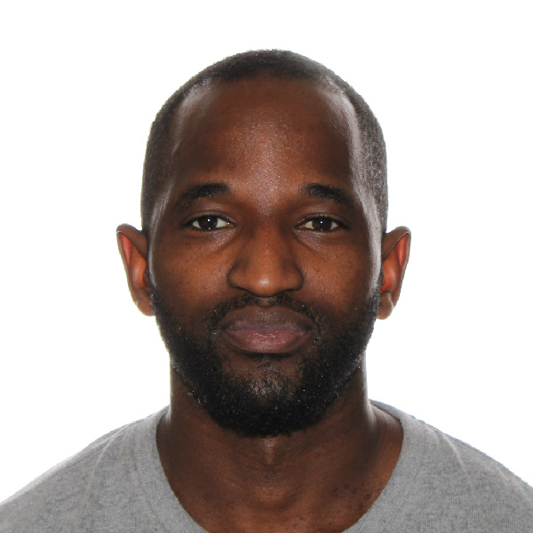

Andrew Ngwira

Junior Software Developer | Software Engineering Graduate
Essex, United Kingdom
Telephone: 07399122391 | Email: andrew.engwira@gmail.com
GitHub: https://github.com/AndrewIsThatGuy
Objective Statement
Software Engineering graduate from VIA University College,
Denmark, with a Bachelor's degree completed in June 2020.
Possesses an academic foundation in software engineering, programming, software development principles and systems analysis.
Currently refreshing and expanding practical programming skills, with a particular interest in web development, JavaScript, Python and modern software technologies.
A motivated and analytical individual with strong problem-solving abilities, attention to detail and a commitment to continuous technical development.
Seeking a Junior Software Developer opportunity to apply academic knowledge, develop practical industry experience and contribute to building reliable and user-friendly software applications.
TECHNICAL SKILLS
Programming Languages:
- JavaScript
- Python
- CCS3
- HTML 5
Development Tools:
- Visual Studio Code
- Git and GitHub (developing practical experience)
Software Engineering
- Software development principles
- Object-oriented programming concepts
- Systems analysis and design
- Database fundamentals
- Technical problem-solving
EDUCATION
VIA University College, Denmark
June 2020
Relevant academic foundation:
- Software engineering and application development.
- Programming and computational thinking.
- Systems analysis and design.
- Software architecture and development principles.
- Analytical problem-solving.
WORK EXPERIENCE
Residential Childcare Support Worker
Blak Diamond Social Care Limited, United Kingdom
2024 to Present
- Demonstrate accountability, attention to detail and effective communication.
- Maintain accurate digital records and professional documentation.
- Collaborated with team members to maintain a positive and nurturing environment.
- Apply analytical thinking and problem-solving in a structured working environment.
CERTIFICATIONS AND ACHIEVEMENTS
- Software Engineering Bachelor's Degree, VIA University College, Denmark (June 2020)
Hobbies
Contact Me